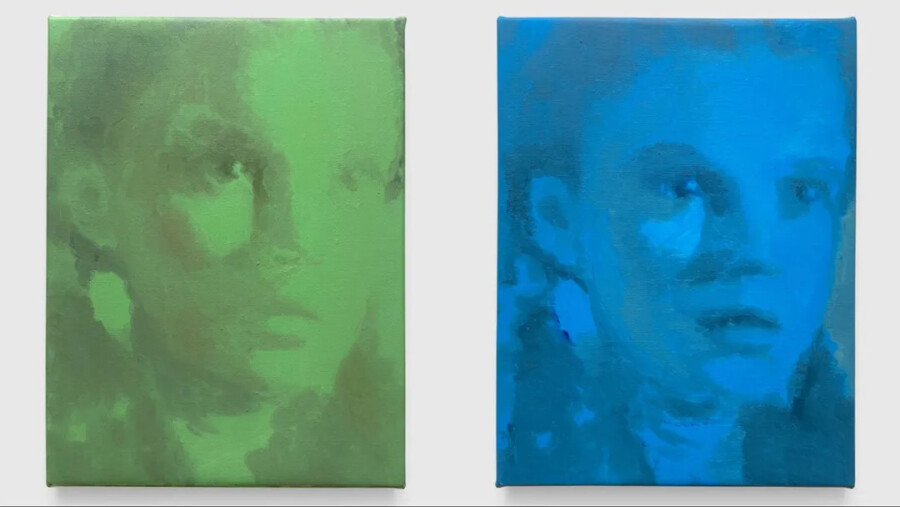

Marina Ross: COUNTDOWN
Celebrate the opening of Marina Ross’s new art exhibition, Countdown, which will be on view in our 2nd floor display cases through March 29th. Join us for an opportunity to meet the artist and curator while enjoying complimentary refreshments at the North Fireplace in the Drawing Room.
About the Exhibition
In Countdown, Marina Ross returns to the visual language of The Wizard of Oz—not as nostalgia, but as rupture. Through layered oil paintings drawn from familiar cinematic imagery, Ross explores grief, displacement, and the fragile construction of identity. Repetition becomes a cadence, shaping how time is felt and held, as figures hover in states of partial presence—blurred, eroded, and unresolved. At once intimate and collective, Countdown invites viewers into a space of quiet intensity, where memory lingers, fantasy falters, and painting becomes a form of witnessing.
About the Artist and Curator
Marina Ross (b. 1990, former Soviet Union) is an artist whose work draws on reference imagery from The Wizard of Oz (1939) as a repository of cultural and personal memory. She received her MFA from the University of Iowa and her BFA from the University of Illinois at Urbana–Champaign. Her work has been shown in Los Angeles at Tappan Collective and De Boer Gallery, and throughout Chicago at The Plan, Goldfinch Gallery, ARTRUSS, Roman Susan, SULK, Baby Blue Gallery, and the Hyde Park Arts Center, among others. She was named a Newcity Breakout Artist in 2025 and has received grant funding from the Illinois Arts Council, the Department of Cultural Affairs and Special Projects (Chicago), Loyola University Chicago, North Park University, and the University of Iowa. She currently teaches at Loyola University Chicago. Her work can be found at marina-ross.com and on Instagram @marinaross_studio
Greek-born Vasia Rigou is writer, editor, and curator exploring visual art, culture, architecture, and design. She is the editor of Newcity, Chicago’s leading culture publication, and regularly contributes to Chicago Reader, Artnet News, and international magazines OnOffice and ICON. In her curatorial practice, she explores themes of identity, intimacy, and belonging with exhibitions at the Chicago Artists Coalition—where she was awarded the HATCH curatorial residency—the Swedish American Museum, the Design Museum of Chicago, the Chicago Athletic Association, the Museum of Danish America, and other venues. Her traveling exhibition Lay Of(f) the Land is on view at the Ostrobothnian Museum in Finland before heading to Sweden in spring 2026. Her work can be found at rigouvasia.com and on Instagram @vasiarigou.